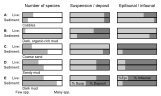
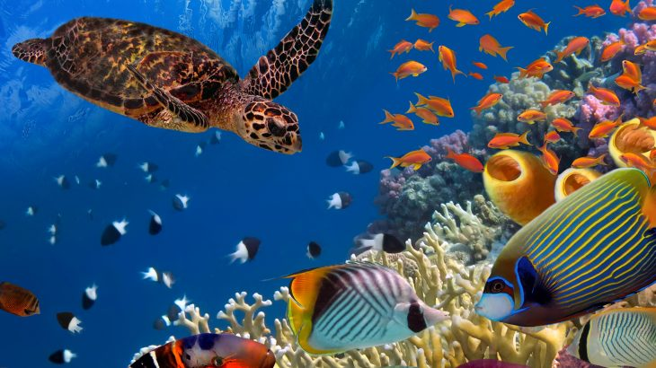
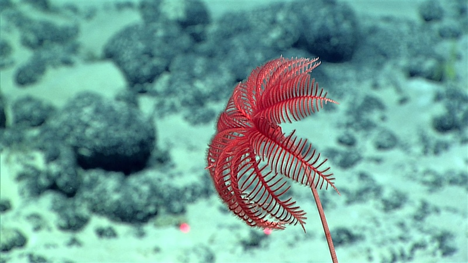
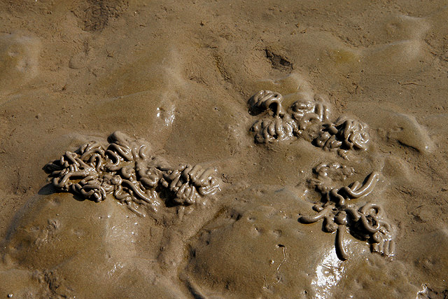

Reconstructing a marine ecosystem
[40 minutes]
It’s time to put your interpretative skills to the test. Marine biologists have collected samples from a variety of points off a shoreline. At each locality, they have counted the individuals that were alive at the time of sampling, as well as the dead individuals whose remains could be identified from a sediment sample taken at the site.
Some localities yeilded very similar data, and so are grouped together, so there is more than one locality with characteristics 'D', for example.
Use the summary statistics given below to reconstruct the ecology of the coastline, and construct a scenario that might account for the observed data.
Data summary
Understanding the data
Rows A–E specify the diversity and ecology of the life and death assemblages sampled at each locality. The nature of the sediment is recorded under each row.
Number of species
The shaded bar shows how many species were recorded at each site. For example, very few species were present in the living community when B was sampled, in contrast to the very high diversity of species in the sediment, a dark, organic-rich mud.

- What environmental factors must be present for a high diversity to be maintained?
- What might limit the number of species that an environment can support?
Suspension / deposit
This column records the proportion of individuals that were suspension feeders (light shading) or deposit feeders (dark shading).
The living community at C is dominated by suspension feeders, whereas deposit feeders are much more prominent in E.

- What environmental conditions are favoured by suspension feeders?
- What factors would make deposit feeding more attractive?
Epifaunal / infaunal
The light bars here denote the proportion of individuals that are epifaunal, i.e. living on the surface of the sea floor. The community at A is predominantly epifaunal.
The dark bars denote the proportion of infaunal individuals, which predominate in, for example, C.

- How does an organism benefit from being infaunal? Epifaunal?
- What environmental conditions does burrowing require?
Interpreting the data
How do we start to build a story from our data?
First, let's take a look at each sample in turn. What environmental factors are implied by the diversity and ecology of the sampled organisms? Can you explain any differences between the life assemblage, which represents the present moment in time, and the death assemblage, which may contain organisms that died over a much longer time period? If there's no difference, what does this tell you about the stability of the environment?
Once you start to have a feeling for the sort of environment that each sample represents, head back to the map. Can you tell a geologically / geographically plausible story that explains your observations, and is consistent with your interpretations?